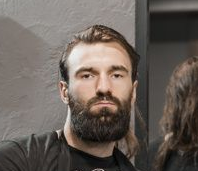
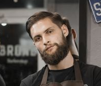
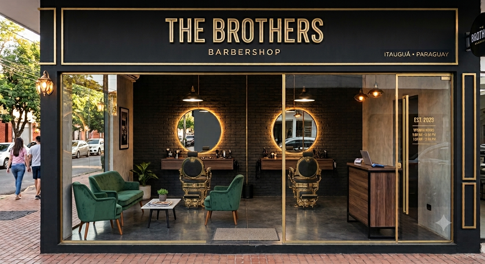
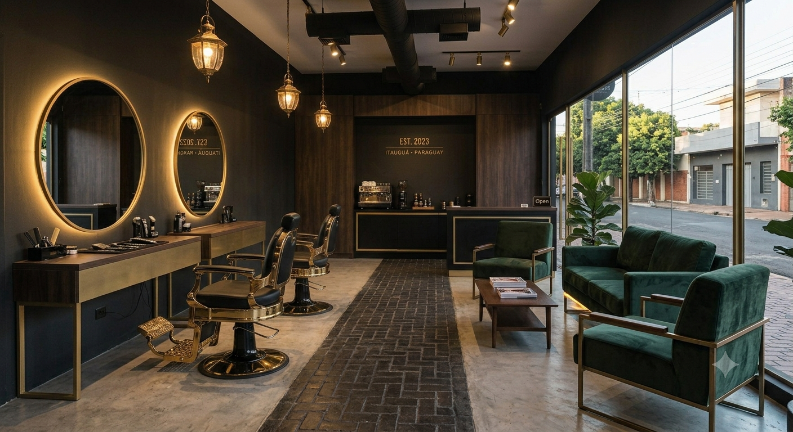

Barbería y Tradición · Itauguá - Paraguay
Un sueño forjado entre tijeras, tradición y el calor de Itauguá.
En el corazón de Itauguá, donde el aire huele a ñanduti y la brisa del arroyo Yukyry trae historias de antaño, hay un lugar donde el tiempo parece detenerse y el arte de la barbería se vive con pasión. Ese lugar es The Brothers Barbershop.
No siempre fue un local con luces de neón y sillas reclinables. Nuestra historia comienza en una pequeña vereda de la compañía Potrero, donde dos hermanos, Mateo y Santiago, crecieron viendo a su abuelo Don Eulalio afilar navajas y cortar el cabello a los vecinos bajo la sombra de un gran lapacho. Para ellos, el sonido de la tijera no era ruido; era música de hogar.
Mateo, el mayor, siempre fue el meticuloso, el de la mano firme y la paciencia de orfebre. Santiago, el menor, heredó el carisma y la labia de su abuelo, capaz de hacer reír hasta al cliente más serio mientras caían los cabellos. Mientras Mateo estudiaba técnicas modernas de corte en Asunción, Santiago perfeccionaba el arte de la conversación y la vieja escuela en las peluquerías de barrio.
Pasaron los años, y cada uno hizo su camino, pero el sueño de tener su propio lugar nunca se apagó. Una tarde de enero, tomando tereré bajo el mismo lapacho de su infancia, decidieron que era el momento. Juntaron sus ahorros, restauraron dos sillas antiguas que encontraron en un galpón de la ciudad y, con más ilusión que dinero, abrieron las puertas de The Brothers Barbershop en el centro de Itauguá.
Hoy, nuestra barbería es un punto de encuentro donde se mezclan generaciones. Los abuelos vienen por el recuerdo de Don Eulalio, los jóvenes por el estilo moderno y los niños por la primera vez que se sientan en una silla de barbero. Porque en The Brothers Barbershop no solo cortamos cabello, cuidamos historias.
Brindar un servicio de barbería de excelencia, combinando técnicas tradicionales con tendencias modernas, en un ambiente cálido y familiar donde cada cliente se sienta como en casa. Nos comprometemos a resaltar la esencia y el estilo de cada persona que confía en nosotros.
Ser la barbería de referencia en Itauguá y la zona metropolitana, reconocida por nuestra calidad, calidez y tradición. Queremos expandir el legado de Don Eulalio, formando nuevas generaciones de barberos y manteniendo vivo el arte de la navaja y la tijera.
Respetamos las técnicas de antaño, las navajas y la precisión que nos enseñó Don Eulalio.
Cada cliente es parte de la familia. Escuchamos, aconsejamos y cuidamos tu estilo.
Amamos lo que hacemos. Cada corte es una obra de arte hecha con dedicación.
Valoramos a cada persona que entra por nuestra puerta, sin importar edad o estilo.
Siempre estamos aprendiendo, actualizándonos y buscando nuevas formas de sorprenderte.
Detrás de cada corte hay un equipo apasionado que hace posible la experiencia The Brothers.

Fundador · Barbero PrincipalEl meticuloso. Especialista en cortes clásicos, degradados y barba. Con más de 10 años de experiencia, es el alma técnica de The Brothers Barbershop.

Fundador · BarberoEl carismático. Especialista en cortes modernos, tendencias y atención al cliente. Heredó la labia y el corazón de su abuelo Don Eulalio.
La primera sonrisa que te recibe. Se encarga de la organización, las redes sociales y que cada visita sea una experiencia inolvidable.
Un lugar donde la tradición y el estilo se encuentran. Te invitamos a conocer nuestro local en el corazón de Itauguá.

Fachada principal
Ambiente y sillas vintage
Dirección: Calle Coronel Martínez esq. 14 de Mayo, Itauguá - Paraguay
Horario: Lun a Sáb · 8:00 a 20:00
Horario: Dom · 9:00 a 14:00
Teléfono: (0981) 123-456
"Donde el arte y la tradición se encuentran"